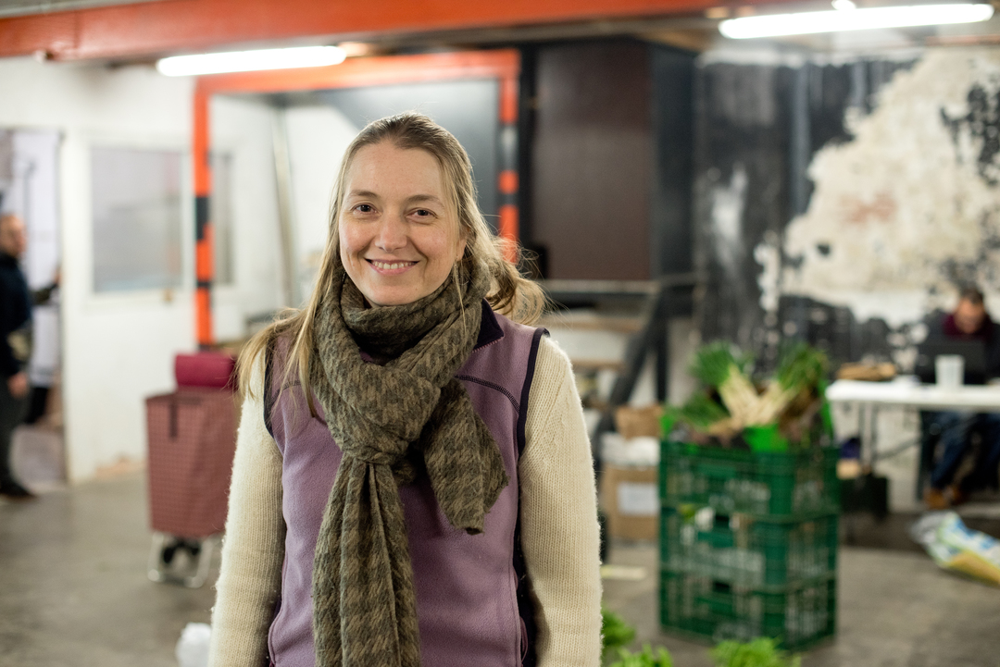
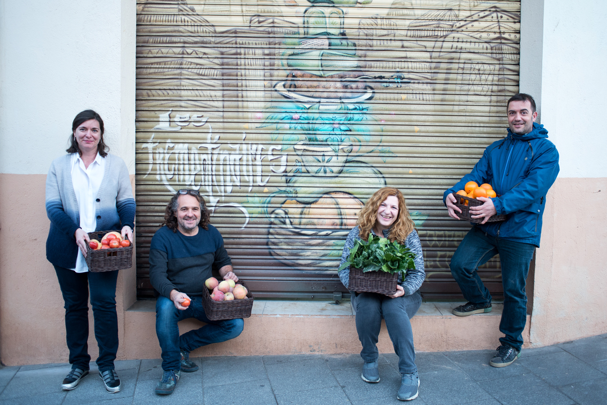
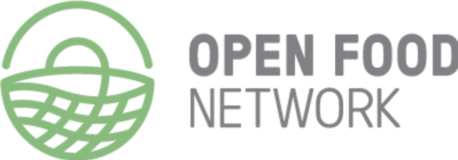

Consumeix productes de proximitat i participa d'un model sostenible amb beneficis socioeconòmics per a la comunitat.
Fes-te mecenesCom a eina per potenciar la sobirania alimentària i afavorir productors locals que fan una agricultura diferent.
Persones, grups de consum i productores de proximitat en són les propitàries i decideixen el rumb de Katuma
Perquè també hem d'exercir els nostres drets digitals i el nostre projecte és un esforç col·lectiu i obert.
Katuma es basa en el software lliure Open Food Network, que ja s'aplica a Austràlia, Regne Unit, Canadà i França entre d'altres països. Els desenvolupadors que traballen a Katuma formen part del nucli del projecte.
Impulsat per